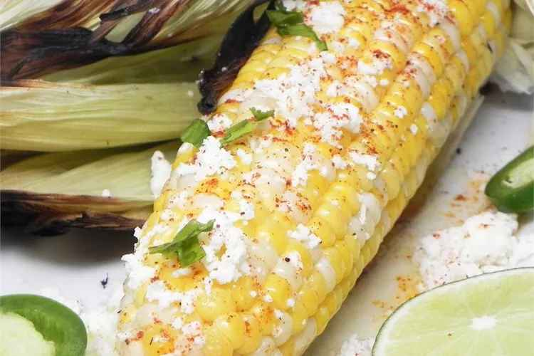

Mexican Corn

This elote recipe for Mexican corn on the cob was given to me by a Mexican friend of mine. Street vendors there sell their corn made this way.
Ingredients
- 4 corn cobs
- Butter and mayonaise
- Cotija Cheese
- Lime
Steps
- Grill corn until charred on all sides
- Roll in butter and spread with mayonaise
- Sprinkle with Cotija, squeeze 1/4 lime on top